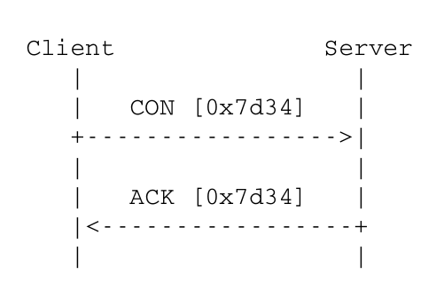
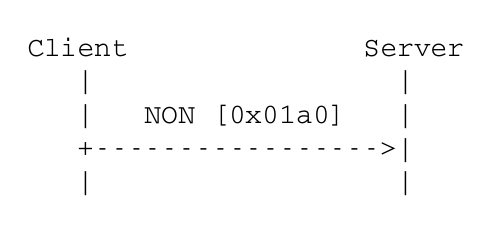
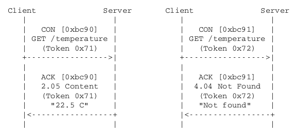
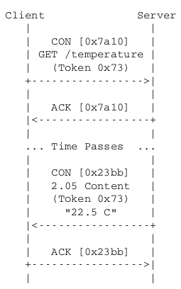
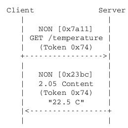
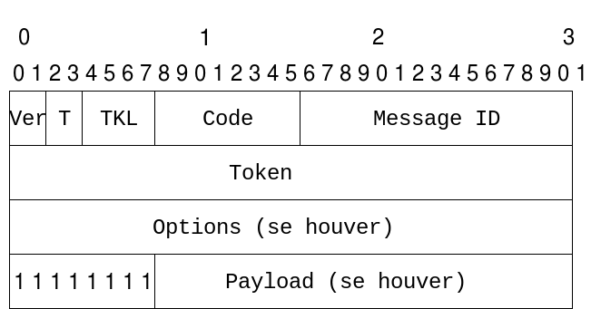
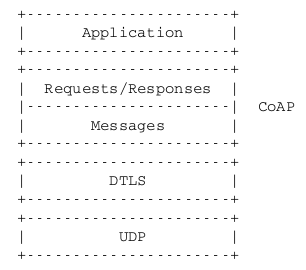

O modelo de mensagens do CoAP é baseado na troca de mensagens de ponta a ponta através do
protocolo UDP. São 4 os tipos de mensagens usadas no protocolo CoAP :
Confirmável (CON) : Mensagens que precisam ser confirmadas. Quando
nenhum pacote é perdido, cada mensagem deste tipo resulta em uma mensagem do tipo
acknowledgement ou do tipo reset.
Não Confirmável (NON) : Mensagens que não necessitam confirmação. Esse
tipo de mensagem é usado para dados que são repetidos regularmente para requisito
de aplicação, como mensagens repetidas de um sensor.
Acknowledgement (ACK) : Confirma que uma mensagem confirmável chegou.
Essa mensagem não indica o sucesso ou a falha de um request
encapsulado na mensagem confirmável.
Reset (RST) : Indica que uma mensagem específica (Confirmável ou
Não Confirmável) foi recebida, entretanto por falta de contexto, a mensagem não pôde ser processada.
Essa condição é normalmente causada quando um nó de recebimento foi reiniciado e a mensagem enviada
não foi devidamente interrompida.
A confiabilidade é fornecida marcando uma mensagem como confirmável (CON). Uma mensagem
confirmável é retransmitida usando um tempo limite padrão entre retransmissões,
até o destinatário, enviando uma mensagem de confirmação (ACK) com o mesmo ID de mensagem.

Figura 3: Transmissão de Mensagem Confirmável (CON).Reproduzido de RFC 7252.
Quando um destinatário não é capaz de processar uma mensagem como confirmável, ele
responde com uma mensagem Reset (RST) no lugar de Acknowledgement (ACK).
Uma mensagem que não requer transmissão confiável (por exemplo, mensagens que são repetidas regularmente
em aplicações, assim como leituras repetidas de um sensor) pode ser enviada como uma mensagem não confirmável (NON).
Estas não são reconhecidas, mas ainda têm um ID de mensagem para detecção duplicada. Quando um destinatário não for
capaz de processar uma mensagem não confirmável, pode-se responder com uma mensagem de Reset (RST).

Figura 4: Transmissão de Mensagem Não Confirmável (NON).Reproduzido de RFC 7252.
Como o CoAP é executado sobre UDP, que é um protocolo não confiável, também suporta o
uso dos endereços multicast IP de destino, permitindo solicitações
multicast CoAP, como precaução para evitar o congestionamento da resposta.
Um request (requisição) pode ser enviado através de uma mensagem CON (confirmável) ou
NON (não confirmável), e, se estiver imediatamente disponível, deve ser enviada uma mensagem ACK para a
mensagem CON. Isso é a chamada resposta piggybacked.
(Não há motivo para enviar um ACK separado para uma resposta piggybacked, já que o cliente
retransmitirá o request caso a mensagem ACK seja perdida).

Figura 5: Dois requests GET com respostas piggybacked.Reproduzido de RFC 7252.
Caso o servidor não esteja apto a responder imediatamente um request de uma mensagem CON, ele
simplesmente responde com um ACK vazio. Dessa forma o cliente sabe que pode parar de retransmitir o
request. Quando a resposta estiver pronta para ser enviada, o servidor envia uma nova mensagem CON.

Figura 6: Um request GET com resposta separada.Reproduzido de RFC 7252.
Caso um request seja enviado através de uma mensagem NON, então a resposta é enviada usando uma
nova mensagem NON.

Figura 7: Um request e uma resposta, ambos NON.Reproduzido de RFC 7252.
O protocolo suporta o armazenamento de respostas com a finalidade de atender de forma
eficiente aos pedidos. O armazenamento em cache simples é ativado usando informações de
atualização e validade transportadas com respostas CoAP. Um cache pode ser localizado em
um nó (ponto final) ou um intermediário.
Proxying é útil em redes limitadas por diversos motivos, inclusive por limitar o
tráfego na rede, melhorar a performance, acessar recursos de "sleeping devices", e por
motivos de segurança. O proxy de request de um nó na extremidade é suportado no
protocolo. Quando usado um proxy, a URI do "recurso a ser solicitado será incluído na
solicitação, enquanto o endereço IP de destino é setado como o endereço de IP do proxy.
Como o CoAP foi projetado de acordo com a arquitetura REST, e por isso exibe
funcionalidades similares ao protocolo HTTP, é possível traçar um paralelo entre os dois
protocolos, mapeando de CoAP para HTTP e vice-versa. Tal mapeamento pode ser usado para
realizar a interface HTTP REST usando CoAP ou para converter entre HTTP e CoAP. Essa
conversão pode ser realizada por um proxy de protocolo cruzado
("cross-proxy"), o qual converte o método ou código de resposta, tipo de mídia
e opções para o recurso HTTP correspondente.

Figura 8: Cabeçalho do CoAP.Reproduzido de RFC 7252.
CoAP é baseado na troca de mensagens compactadas que, por padrão, são transportadas pelo
UDP (ou seja, cada mensagem do CoAP ocupa uma seção de dados de um datagrama UDP).
As mensagens do CoAP são codificadas em um simples formato binário. O formato da
mensagem começa com um cabeçalho de tamanho fixo de 4 bytes. Seguido por um valor
de token de comprimento variável, que pode ter entre 0 a 8 bytes de
comprimento. Seguido pelo valor de token, vem uma sequência de zeros ou mais.
Versão (Ver) :unsigned int de 2 bits.
Indica o número de versão do CoAP. Implementações dessa especificação DEVEM estabelecer esse campo em 1 (01 binário).
Outros valores são reservados para versões futuras. Mensagens com número de versão
desconhecido DEVEM ser silenciosamente ignoradas.
Tipo (T) :unsigned int de 2 bits.
Indica se a mensagem é de um dos tipos:
Comprimento de Token (TKL) :unsigned int de 4
bits. Indica o tamanho da variável do token, que pode variar de 0 a 8
bytes. Comprimentos de 9 a 15 são reservados e não devem ser enviados.
É um campo sempre gerado pelo cliente CoAP.
Código (Code) :unsigned int de 8 bits, dividido em 3
bits para classe (bits mais
significantes) e 5 bits para detalhes (bits menos significantes).
A classe pode indicar uma requisição (0), resposta de sucesso (2), resposta de erro do
cliente (4), ou resposta de erro do servidor (5). (Todas as outras classes são
reservadas). Em casos especiais no código 0.00 indica uma mensagem vazia.
ID da mensagem :unsigned int de 16 bits. Usada para detectar
mensagens duplicadas e equiparar mensagens do tipo de Confirmação/Reset para mensagens do tipo
Confirmável/Não Confirmável.
Uma mensagem ACK ou RST é relacionada com uma mensagem CON e NON através de uma mensagem
de ID junto com o endereço do nó correspondente.
A mensagem ID é gerada pelo transmissor de uma mensagem CON ou NON e incluída no cabeçalho do
CoAP. A mensagem ID deve ecoar um ACK ou RST do cliente.
Além disso, a mesma mensagem ID deve esperar o Exchange Lifetime
(tempo de espera pelo ACK após uma mensagem CON ser enviada) terminar para ser
reenviada em uma comunicação com o mesmo nó.
Para uma mensagem ACK ou RST combinar com uma CON ou NON , a mensagem ID e nó de
origem do ACK ou RST devem combinar com a mensagem ID e nó de destino do CON ou NON.
Com o intuito de não causar congestionamento, clientes (incluindo proxies) DEVEM
estritamente limitar o número de interações excepcionais externas simultâneas que eles
mantêm com determinado servidor (incluindo proxies) para NSTART.
Uma outstanding interaction (interação excepcional) é tanto uma CON que ainda não
recebeu um ACK, mas ainda está esperando ou um request que não recebeu nem uma resposta
nem um ACK, mas que ainda está esperando (que pode ocorrer ao mesmo tempo, contando como
apenas uma interação excepcional). O valor padrão de NSTART para essa
especificação é de 1.
Depois de esgotado o tempo de recebimento do ACK (Exchange Lifetime),
o cliente deixa de esperar a resposta para a CON enviada. Otimizações de controle de congestionamento
adicionais permitem definir condições de parada de espera do ACK, de modo que um endpoint
não inunde o fluxo da rede no envio para outro nó de extremidade que não responde.
Assim como para HTTP existe um protocolo de segurança para transporte de mensagens
(TLS - Transport Layer Security) que atua sobre o TCP, o CoAP também é
protegido através do Datagram TLS (DTLS) que atua sobre o UDP, chamado CoAPs.
Na prática, DTLS é TLS com configurações para lidar com a natureza não confiável do transporte de mensagens UDP.

Figura 9: Pilha das camadas com inclusão do CoAP protegido pelo DTLS.Reproduzido de RFC 7252.
Modos de segurança:
NoSec : não há segurança na camada de transporte. É o único modo no qual o DTLS está desabilitado,
deixando a segurança, caso precise, para as camadas de níveis mais baixos.
Pre-shared key (PSKs) : conjunto de chaves que foram previamente estabelecidas
e permitem que os nós saibam quais os outros que podem estabelecer conexões.
Raw Public Key : é um par assimétrico de chaves sem certificado.
O dispositivo também tem uma identificação calculada pela chave e uma lista de identidade
dos nós com os quais pode se comunicar.
Certificates : adiciona um certificado X.509 ao par assimétrico de chaves
e usa Trusted Third Party (TTP) para validar a autenticidade dos nós.
Ambos os nós da conexão devem ser clientes DTLS. A sessão deve ser iniciada na porta adequada e deve-se primeiro
estabelecer a conexão (através do handshake) para então começar a transmitir mensagens.
Além disso, também é importante que durante uma interação entre cliente e servidor usando DTLS,
o request de um cliente, de qualquer tipo, deve conter sessão, timestamp
e Message ID correspondentes. O mesmo vale para a resposta do request.